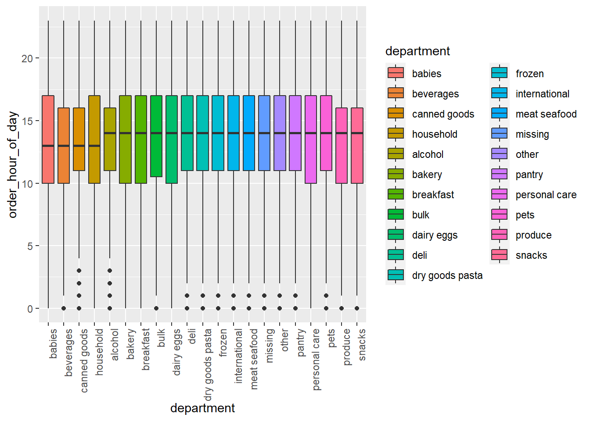

insta_bar =
instacart %>%
count(department) %>%
filter(!is.na(department)) %>%
mutate(department = fct_reorder(department, n)) %>%
plot_ly(x = ~department, y = ~n, color = ~department, type = "bar", colors = "viridis")
insta_barinsta_box =
instacart %>%
filter(!is.na(department)) %>%
mutate(department = fct_reorder(department, order_hour_of_day)) %>%
ggplot(aes(x = department, y = order_hour_of_day, fill = department)) +
geom_boxplot() +
theme(axis.text.x = element_text(angle = 90, hjust = 1))
insta_box
insta_scatter =
instacart %>%
count(days_since_prior_order) %>%
filter(!is.na(days_since_prior_order)) %>%
ggplot(aes(x = days_since_prior_order, y = n, color = n)) +
geom_point(alpha = 0.25) +
coord_cartesian()
insta_scatter